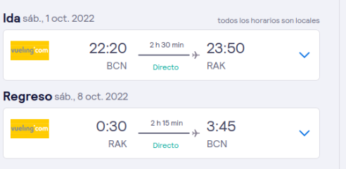
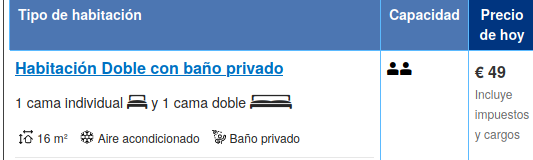

Para hacer esta ruta por Marruecos, tienes que volar a Marrakech, una parada obligatoria en todo viaje a Marruecos.

Después del viaje del avión vamos a ir a un hotel con el transporte:

Y al finalizar vamos al hotel:

Como es el principio y final de esta ruta por Marruecos esto podemos hacer en dos dias!
El primer día podremos hacer un free tour por Marrakech una visita guiada en español donde recorres los lugares más emblemáticos y pagas según valores al guía. (puede ser gratis)

Después del tour vamos a un hamman en Marrakech

El segundo día comienza cruzando el Atlas por su punto más alto, el Col du Tichka a más de 2.000 metros de altura, de camino a Kasbah Ait Ben Haddou.

Otra parada en este viaje por Marruecos es la Kasbah del Pacha Glaui en Telouet, mientras se va pasando por varios pueblos bereberes de camino a la Kasbah de Ait Ben Haddou.
Alojamiento:

Ouarzazate están los estudios de cine Atlas Studio, conocidos como el Hollywood del desierto, donde se grabaron escenas de “Asterix y Obelix: Misión Cleopatra” y «La joya del Nilo»o «Gladiator» entre otras…
El tercer día por Marruecos visitamos el Oasis de Skoura, Valle de las Rosas, Valle de Dades, Gargantas de Todra y Merzouga.

De Merzouga a Mharech Podemos disfrutar del amanecer sobre las dunas, un espectáculo igual de inolvidable que el atardecer. Aunque hoy tengas que madrugar.

El quinto día de este roadtrip salimos de Mharech, paramos en Alnif, Tazzarine y Tighremet, haciendo noche en N`kob
Es el día de esta ruta por Marruecos en 4×4 donde mayor cambio de paisajes vas a vivir, atravesando desiertos de todo tipo.
El sexto día pasamos por el Valle del Dra